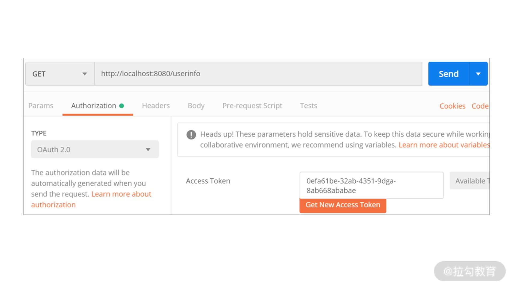
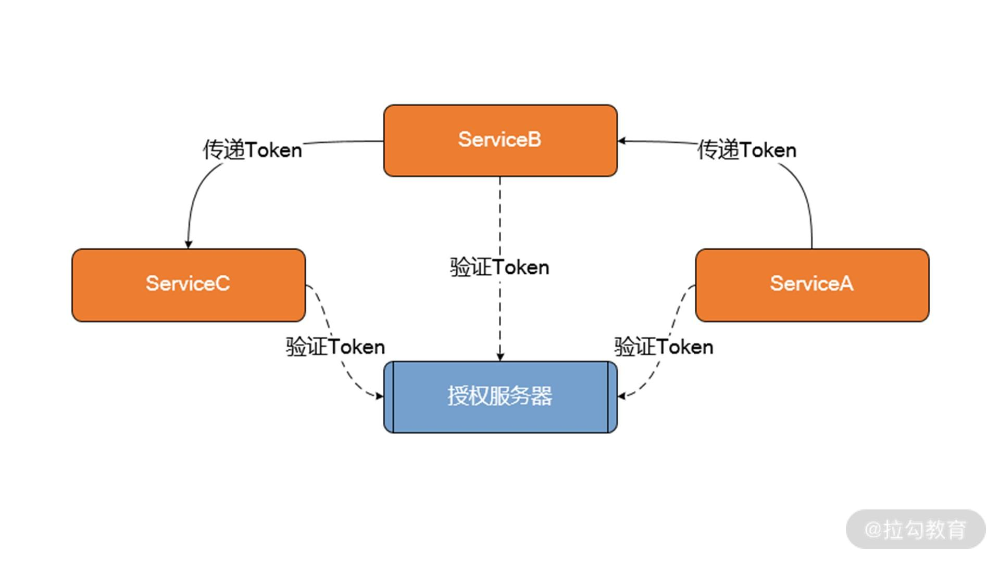
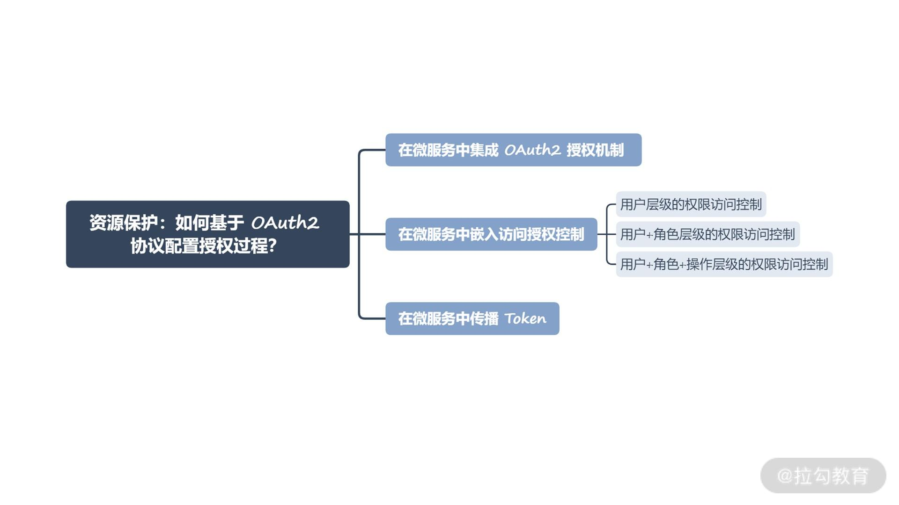

- 00 开篇词 Spring Security，为你的应用安全与职业之路保驾护航.md.html
- 01 顶级框架：Spring Security 是一款什么样的安全性框架？.md.html
- 02 用户认证：如何使用 Spring Security 构建用户认证体系？.md.html
- 03 认证体系：如何深入理解 Spring Security 用户认证机制？.md.html
- 04 密码安全：Spring Security 中包含哪些加解密技术？.md.html
- 05 访问授权：如何对请求的安全访问过程进行有效配置？.md.html
- 06 权限管理：如何剖析 Spring Security 的授权原理？.md.html
- 07 案例实战：使用 Spring Security 基础功能保护 Web 应用.md.html
- 08 管道过滤：如何基于 Spring Security 过滤器扩展安全性？.md.html
- 09 攻击应对：如何实现 CSRF 保护和跨域 CORS？.md.html
- 10 全局方法：如何确保方法级别的安全访问？.md.html
- 11 案例实战：使用 Spring Security 高级主题保护 Web 应用.md.html
- 12 开放协议：OAuth2 协议解决的是什么问题？.md.html
- 13 授权体系：如何构建 OAuth2 授权服务器？.md.html
- 14 资源保护：如何基于 OAuth2 协议配置授权过程？.md.html
- 15 令牌扩展：如何使用 JWT 实现定制化 Token？.md.html
- 16 案例实战：基于 Spring Security 和 Spring Cloud 构建微服务安全架构.md.html
- 17 案例实战：基于 Spring Security 和 OAuth2 实现单点登录.md.html
- 18 技术趋势：如何为 Spring Security 添加响应式编程特性？.md.html
- 19 测试驱动：如何基于 Spring Security 测试系统安全性？.md.html
- 20 结束语 以终为始，Spring Security 的学习总结.md.html
14 资源保护：如何基于 OAuth2 协议配置授权过程？
上一讲我们学习了如何构建 OAuth2 授权服务器，并掌握了生成 Token 的系统方法。今天我们关注的重点是如何使用 Token 实现对服务访问的具体授权。在日常开发过程中，我们需要对每个服务的不同功能进行不同粒度的权限控制，并且希望这种控制方法足够灵活，能够确保不同服务根据业务场景动态调整权限控制体系。同时，在微服务架构中，我们还需要考虑如何在多个服务中对 Token 进行有效的传播，确保整个服务访问的链路都得到授权管理。借助 Spring Security 框架，实现这些需求都很简单，下面我们就来展开学习。
在微服务中集成 OAuth2 授权机制
我们知道在 OAuth2 协议中，单个微服务的定位就是资源服务器。Spring Security 框架为此提供了专门的 @EnableResourceServer 注解。通过在 Bootstrap 类中添加 @EnableResourceServer 注解，相当于声明该服务中的所有内容都是受保护的资源，示例代码如下所示：
@SpringBootApplication
@EnableResourceServer
public class UserApplication {
public static void main(String[] args) {
SpringApplication.run(UserApplication.class, args);
}
}
一旦我们在微服务中添加了 @EnableResourceServer 注解，该服务就会对所有的 HTTP 请求进行验证以确定 Header 部分中是否包含 Token 信息。如果没有 Token 信息，就会直接限制访问；如果有 Token 信息，则通过访问 OAuth2 服务器进行 Token 的验证。那么问题来了，每个微服务是如何与 OAuth2 服务器进行通信并获取传入 Token 的验证结果的呢？
要想回答这个问题，我们需要明确将 Token 传递给 OAuth2 授权服务器的目的是获取该 Token 中包含的用户和授权信息。这样，我们势必需要在各个微服务和 OAuth2 授权服务器之间建立起一种交互关系。我们可以在配置文件中添加如下所示的 security.oauth2.resource.userInfoUri 配置项来实现这一目标：
security:
oauth2:
resource:
userInfoUri: http://localhost:8080/userinfo
这里的 http://localhost:8080/userinfo指向 OAuth2 授权服务器中的一个自定义端点，实现方式如下所示：
@RequestMapping(value = "/userinfo", produces = "application/json")
public Map<String, Object> user(OAuth2Authentication user) {
Map<String, Object> userInfo = new HashMap<>();
userInfo.put("user", user.getUserAuthentication().getPrincipal());
userInfo.put("authorities", AuthorityUtils.authorityListToSet(
user.getUserAuthentication().getAuthorities()));
return userInfo;
}
这个端点的作用就是获取可访问的那些受保护服务的用户信息。这里我们用到了 OAuth2Authentication 类，该类保存着用户的身份（Principal）和权限（Authority）信息。
当使用 Postman 访问 http://localhost:8080/userinfo 端点时，我们就需要传入一个有效的 Token。这里我们以上一讲中生成的 Token“0efa61be-32ab-4351-9dga-8ab668ababae”为例，在 HTTP 请求中添加一个“Authorization”请求头。请注意，因为我们使用的是 bearer 类型的 Token，所以需要在 access_token 的具体值之前加上“bearer”前缀。当然，我们也可以直接在“Authorization”页中选择协议类型为 OAuth 2.0，然后输入 Access Token，这样就相当于添加了请求头信息，如下图所示：

通过 Token 发起 HTTP 请求示意图
在后续的 HTTP 请求中，我们都将以这种方式发起对微服务的调用。该请求的结果如下所示：
{
"user":{
"password":null,
"username":"spring_user",
"authorities":[
{
"autority":"ROLE_USER"
}
],
"accountNonExpired":true,
"accountNonLocker":true,
"credentialsNonExpired":true,
"enabled":true
},
"authorities":[
"ROLE_USER"
]
}
我们知道“0efa61be-32ab-4351-9dga-8ab668ababae”这个 Token 是由“spring_user”这个用户生成的，可以看到该结果中包含了用户的用户名、密码以及该用户名所拥有的角色，这些信息与我们在上一讲中初始化的“spring_user”用户信息保持一致。我们也可以尝试使用“spring_admin”这个用户来重复上述过程。
在微服务中嵌入访问授权控制
在一个微服务系统中，每个微服务作为独立的资源服务器，对自身资源的保护粒度并不是固定的，可以根据需求对访问权限进行精细化控制。在 Spring Security 中，对访问的不同控制层级进行了抽象，形成了用户、角色和请求方法这三种粒度，如下图所示：

用户、角色和请求方法三种控制粒度示意图
基于上图，我们可以对这三种粒度进行排列组合，形成用户、用户+角色以及用户+角色+请求方法这三种层级，这三种层级能够访问的资源范围逐一递减。用户层级是指只要是认证用户就能访问服务内的各种资源；而用户+角色层级在用户层级的基础上，还要求用户属于某一个或多个特定角色；最后的用户+角色+请求方法层级要求最高，能够对某些 HTTP 操作进行访问限制。接下来我们针对这三个层级展开讨论。
用户层级的权限访问控制
通过上一讲的学习，我们已经熟悉了通过扩展各种 ConfigurerAdapter 配置适配器类来实现自定义配置信息的方法。对于资源服务器而言，也存在一个 ResourceServerConfigurerAdapter 类，而我们的做法同样是继承该类并覆写它的 configure 方法，如下所示：
@Configuration
public class ResourceServerConfiguration extends ResourceServerConfigurerAdapter {
@Override
public void configure(HttpSecurity httpSecurity) throws Exception{
httpSecurity.authorizeRequests()
.anyRequest()
.authenticated();
}
}
我们注意到，这个方法的入参是一个 HttpSecurity 对象，而上述配置中的 anyRequest().authenticated() 方法指定了访问该服务的任何请求都需要进行验证。因此，当我们使用普通的 HTTP 请求来访问 user-service 中的任何 URL 时，将会得到一个“unauthorized”的 401 错误信息。解决办法就是在 HTTP 请求中设置“Authorization”请求头并传入一个有效的 Token 信息，你可以模仿前面的示例做一些练习。
用户+角色层级的权限访问控制
对于某些安全性要求比较高的资源，我们不应该开放资源访问入口给所有的认证用户，而是需要限定访问资源的角色。针对不同的业务场景，我们可以判断哪些服务涉及核心业务流程，这些服务的 HTTP 端口不应该开放给普通用户，而是限定只有角色为“ADMIN”的管理员才能访问该服务。要想达到这种效果，实现方式也比较简单，就是在HttpSecurity 中通过 antMatchers() 和 hasRole() 方法指定想要限制的资源和角色。我们可以创建一个新 ResourceServerConfiguration 类实例并覆写它的 configure 方法，如下所示：
@Configuration
public class ResourceServerConfiguration extends
ResourceServerConfigurerAdapter{
@Override
public void configure(HttpSecurity httpSecurity) throws Exception {
httpSecurity.authorizeRequests()
.antMatchers("/order/**")
.hasRole("ADMIN")
.anyRequest()
.authenticated();
}
}
可以看到，这里使用了 05 讲[“访问授权：如何对请求的安全访问过程进行有效配置？”]中介绍的 Ant 匹配器实现了授权管理。现在，如果我们使用角色为“User”的 Token 访问这个服务，就会得到一个“access_denied”的错误信息。然后，我们使用上一讲中初始化的一个具有“ADMIN”角色的用户“spring_admin”来创建新的 Token，并再次访问该服务，就能得到正常的返回结果。
用户+角色+操作层级的权限访问控制
更进一步，我们还可以针对某个端点的某个具体 HTTP 方法进行控制。例如，如果我们认为对某个微服务中的“user”端点下的资源进行更新的风险很高，那么就可以在 HttpSecurity 的 antMatchers() 中添加 HttpMethod.PUT 限定。
@Configuration
public class ResourceServerConfiguration extends ResourceServerConfigurerAdapter {
@Override
public void configure(HttpSecurity httpSecurity) throws Exception{
httpSecurity.authorizeRequests()
.antMatchers(HttpMethod.PUT, "/user/**")
.hasRole("ADMIN")
.anyRequest()
.authenticated();
}
}
现在，我们使用普通“USER”角色生成的 Token，并调用"/order/"端点中的 Update 操作，同样会得到“access_denied”的错误信息。而尝试使用“ADMIN”角色生成的 Token 进行访问，就可以得到正常响应。
在微服务中传播 Token
我们知道一个微服务系统势必涉及多个服务之间的调用，并形成一个链路。因为访问所有服务的过程都需要进行访问权限的控制，所以我们需要确保生成的 Token 能够在服务调用链路中进行传播，如下图所示：

微服务中 Token 传播示意图
那么，如何实现上图中的 Token 传播效果呢？Spring Security 基于 RestTemplate 进行了封装，专门提供了一个用在 HTTP 请求中传播 Token 的 OAuth2RestTemplate 工具类。想要在业务代码中构建一个 OAuth2RestTemplate 对象，可以使用如下所示的示例代码：
@Bean
public OAuth2RestTemplate oauth2RestTemplate(
OAuth2ClientContext oauth2ClientContext,
OAuth2ProtectedResourceDetails details) {
return new OAuth2RestTemplate(details, oauth2ClientContext);
}
可以看到，通过传入 OAuth2ClientContext 和 OAuth2ProtectedResourceDetails，我们就可以创建一个 OAuth2RestTemplate 类。OAuth2RestTemplate 会把从 HTTP 请求头中获取的 Token 保存到一个 OAuth2ClientContext 上下文对象中，而OAuth2ClientContext 会把每个用户的请求信息控制在会话范围内，以确保不同用户的状态分离。另一方面，OAuth2RestTemplate 还依赖于 OAuth2ProtectedResourceDetails 类，该类封装了我们在上一讲中介绍过的clientId、客户端安全码 clientSecret、访问范围 scope 等属性。
一旦 OAuth2RestTemplate 创建成功，我们就可以使用它对某一个远程服务进行访问，实现代码如下所示：
@Component
public class OrderServiceClient {
@Autowired
OAuth2RestTemplate restTemplate;
public Order getOrderById(String orderId){
ResponseEntity<Order> result =
restTemplate.exchange(
"http://orderservice/order/{orderId}",
HttpMethod.GET,
null, Order.class, orderId);
Order order = result.getBody();
return order;
}
}
显然，基于这种远程调用方式，我们唯一要做的就是使用 OAuth2RestTemplate 替换原有的 RestTemplate，所有关于 Token 传播的细节已经被完整地封装在每次请求中。
小结与预告
这一讲我们的关注点在于对服务访问进行授权。通过今天的学习，我们明确了在微服务中嵌入访问授权控制的三种粒度。同时，在微服务系统中，因为涉及多个服务之间的交互，所以需要实现 Token 在这些服务之间的有效传播，我们可以借助 Spring Security 提供的工具类轻松实现这些需求。
本讲内容总结如下： 
最后给你留一道思考题：你能描述对服务访问进行授权的三种层级，以及每个层级对应的实现方法吗？欢迎在留言区分享你的学习收获。